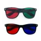

What is diplopia (double vision)?
Diplopia means seeing two images of a single object. The images can be side by side, one above the other, or diagonally separated. Read the full explanation →
Understand double vision, follow evidence-based guidance, and reinforce your rehabilitation with short, engaging games.
Blend clinical guidance with playful repetitions. Short daily sessions may help coordinate eye movements and reduce double vision for some types of stable binocular diplopia under clinician guidance.
Match the pairs in this classic memory challenge to boost sustained attention and binocular coordination.
Best for building tracking accuracy across the visual field.Follow and click the numbered balls in sequence as they glide around the screen.
Supports smooth pursuit control and timing.React to balls that appear one at a time in different locations to sharpen quick eye movements.
Ideal for practicing rapid refixations and visual scanning.Diplopia means seeing two images of a single object. The images can be side by side, one above the other, or diagonally separated. Read the full explanation →
Dichoptic therapy presents different images to each eye simultaneously. Our games balance contrast and motion to encourage binocular fusion and help the eyes work together.
Yes. Wear red/green or red/blue anaglyph glasses so each eye sees its target. Pair the glasses with balanced room lighting and sit 50–70 cm from the screen for consistent fixation.

Example red/green anaglyph glassesIt is very important to first have a full medical evaluation by an eye doctor. After urgent causes are ruled out and the diagnosis is clear, vision rehabilitation can help reduce double vision, improve comfort, and support daily activities.
No. The exercises described on this site are not a substitute for medical evaluation and should always be part of a plan led by your eye doctor and vision rehabilitation specialist.
Research shows that structured eye exercises can help reduce symptoms of double vision in some conditions.
The recommendation is about 10–15 minutes per day, split into several short sessions.
Usually people start to notice improvement after a few weeks, but the exact timing is different for each patient and depends on the type of diplopia and the severity of the condition. Your eye doctor and vision rehabilitation specialist will review your progress in follow up evaluations and adjust the plan for you.
Blend these strategies into your daily practice routine:
דיפלופיה פירושה ראייה של שתי תמונות של אותו אובייקט. התמונות יכולות להופיע זו לצד זו, אחת מעל השנייה או באלכסון זו ביחס לזו. להרחבה ←
במהלך התרגול מוצגות תמונות שונות לכל עין בו־זמנית. המטרה היא לתמוך במיזוג (פיוז׳ן) ובשיתוף פעולה בין העיניים, כדי לעזור לעיניים לעבוד יחד.
כן. חבשו משקפי אנגליפ אדום/ירוק או אדום/כחול כדי שכל עין תראה את המטרה שלה. שלבו את המשקפיים עם תאורה מאוזנת בחדר והתיישבו 50–70 ס"מ מהמסך כדי לשמור על קיבוע קבוע.
חשוב לעבור הערכה רפואית על ידי רופא עיניים. לאחר שנשללים מצבים דחופים והאבחנה ברורה, שיקום ראייה יכול לעזור להפחית כפל ראייה, לשפר נוחות, ולתמוך בתפקוד בפעילויות היומיום.
לא. התרגילים המתוארים באתר אינם תחליף להערכה רפואית, והם צריכים להיות חלק מתכנית טיפול שמובלת על ידי רופא העיניים ומומחה לשיקום תפקודי ראייה.
מחקרים מראים שתרגילי עיניים מובנים יכולים לעזור להפחית סימפטומים של כפל ראייה בחלק מהמקרים.
ההמלצה היא לתרגל כ־10–15 דקות ביום, מחולקות למספר מקטעים קצרים.
בדרך כלל אנשים מתחילים להרגיש שיפור אחרי מספר שבועות, אך משך הזמן משתנה מאדם לאדם ותלוי בסוג הדיפלופיה ובחומרת המצב. רופא העיניים והמומחה לשיקום תפקודי ראייה יעקבו אחר ההתקדמות בביקורות תקופתיות ויתאימו את התכנית לפי הצורך.
תכנית השיקום צריכה להתבצע בהנחיה וליווי של מומחה לשיקום תפקודי הראייה (לדוגמה: מרפאה בעיסוק המתמחה בשיקום ראייה, אופטומטריסט/ית).
שלבו אסטרטגיות אלה כדי לתמוך בתרגול היומי: